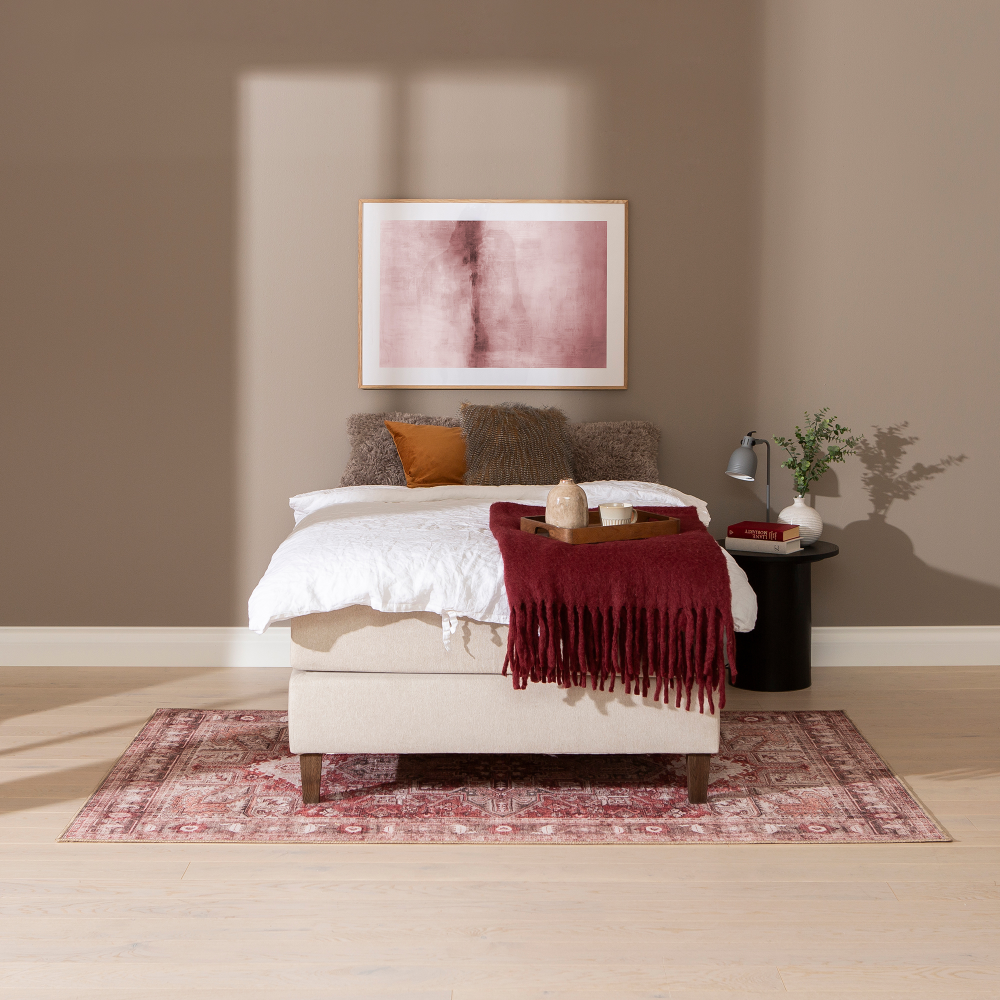
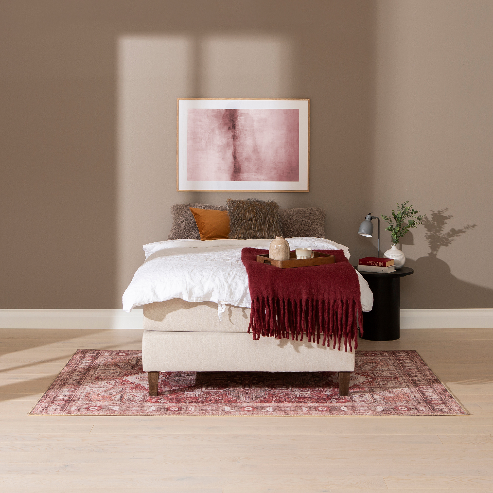

Moon Gold continental bed 140x200, pocket 7-zone. Primo 05 beige
197718
 

Description
Experience restful nights and elegant bedroom ambiance with the Moon Gold continental bed, sized 140x200 cm. This bed is designed to combine timeless style with versatile comfort, making it a coveted piece within the Nest & LIVING collection.
Available in the Gold tier, the Moon continental bed offers a premium sleep experience with a choice of supportive 7-zone pocket spring mattress designed to individually contour to your body for optimal rest. Upholstered in sophisticated Primo 05 beige fabric, the bed frame rests on light oak-stained wooden legs that provide a subtle lift and a modern touch without overwhelming your bedroom decor.
Constructed from durable wood and chipboard, this model emphasizes longevity and functionality, backed by a 4000-day quality guarantee for peace of mind. Tailor your bed further by selecting from optional mattress toppers and matching headboards for additional comfort and personalized style (not included).
Maintenance is simple: vacuum regularly and gently wipe with a damp cloth to keep the upholstery looking fresh, thanks to carefully chosen materials that ensure ease of care.
Elevate your bedroom with the Moon Gold continental bed — a perfect harmony of comfort, style, and enduring quality.
Technical specifications
| Available tiers | Gold (this model), also available in Silver and Bronze tiers |
|---|---|
| Colors | Beige or anthracite |
| Comfort options | 7-zone pocket spring mattress or memory foam mattress |
| Frame material | Durable wood and chipboard |
| Legs | Oak-stained wooden legs |
| Mattress topper | Not included (optional at additional cost) |
| Headboard | Not included (optional at additional cost) |
| Size (Width × Length) | 140 × 200 cm |
| Upholstery material | Primo 05 fabric in beige |
| Warranty | 4000-day quality guarantee |